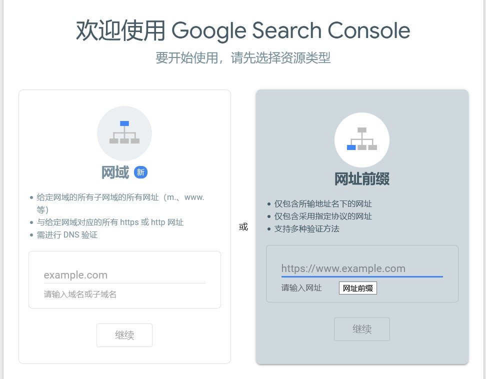
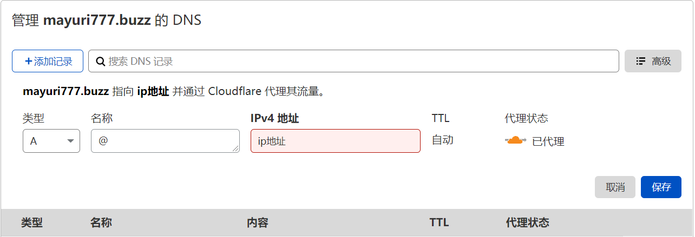

Hexo 生成的是静态文件，不需要数据库和应用服务器跑后端程序，直接部署到 Github Page 上，连购买和维护服务器都可以不做，所以入门门槛低，也可以将集中精力于撰写博客，很适合像爱丽丝这样的建站小白和精力有限的人(☞ﾟヮﾟ)☞
本来想详细写写自己搭建的过程，但一来自己搭建中没有任何记录（爱丽丝笨蛋！笨蛋！），二来本来就是按照前辈们的教程做的，写出来也只是东拼西凑的百家饭而已，食之无味弃之可惜，三来是爱丽丝太懒了（这才不是主要原因呢ヽ(*。>Д<)o゜），所以干脆把自己参考的博客简单整理出来了，前面的这一点是爱丽丝之前写好的，暂时留下当个纪念吧
创建 Hexo 项目
准备
- 一台电脑（爱丽丝使用的是 Win10 系统，所以本文步骤皆按此环境说明）
- 下载并安装git工具 👈一路‘下一步’即可，下同
- 下载安装node.js
此时可以通过 git --version 查看 git 是否安装成功，同样通过 node -v 及 npm -v 查看 node.js 的状况
需要 git 将博客生成的静态文件部署到 Github 上，而 nodejs 是项目的运行环境，npm 是安装 Hexo 本体和相关依赖的管理工具
安装 Hexo
创建一个用于放置博客项目的文件夹并双击进入，右键选择 “Git Bash Here” 或者在上方的文件路径处输入 cmd 然后按回车（两者作用相同，但据说 git bash 更好用一些）打开定位到此文件夹下命令行操作窗
输入 npm install -g hexo-cli 下载安装 Hexo，安装后输入 Hexo -v 验证是否成功（这一步并不必须定位到目标文件夹下，此处是为了下一步方便而为之）
初始化项目
输入 hexo init 初始化该文件夹（如果没有定位到目标文件夹中，需要在命令后加上文件路径，如在上一级目录中输入 hexo init MyBlog）
输入 npm install 安装相关依赖包
目录下的 source 文件夹是存放爱丽丝们创建的文章、页面和相关资源的；themes 文件夹是存放 Hexo 主题的；_config.yml 是博客的配置文件
输入如下命令生成静态文件并在本地运行服务器，在浏览器打开 http://localhost:4000/ 即可看到爱丽丝们的博客界面啦~
1 | hexo g |
上传到 Github 中
详细过程可以参考这篇文章Hexo+Github: 个人博客网站搭建完全教程
安装主题
Hexo 主题最常见的主题为 NEXT，常见也意味着稳定、功能完备、网上的教程丰富，不过爱丽丝使用是 butterfly 主题
按照和使用可以查阅：主题作者的文档，评论、简单美化等常用的效果都可以在里面找到
更换主题的话，只需在 _config.yml 配置文件中，把最后的 theme: butterfly 这里换上自己的主题名字即可食用
相同的配置项，butterfly 的配置文件会覆盖 hexo 的这个配置文件，所以大部分情况下不需要改 _config.yml 可以放心的放置 play 起来
创建和发布文章
创建的 cmd 指令为：hexo new <类型名> 文章名
不写类型的话默认创建文章（post），另一个常用的类型是 page，关于爱丽丝的、分类、标签页面需要这种类型（Hexo 默认不会创建这些页面哦）
如果不想马上发布的话，可以创建一个 draft 草稿类型，草稿默认不会显示在博客界面中，想要在本地预览可以使用hexo s --draft，修改满意后可以使用hexo publish 草稿名 发布出去
指令可以使用&连接起来一次执行， hexo clean & hexo g & hexo s ，像这样会方便一些
hexo 没有删除命令，想要删除文章可以直接到 source/_post 文件夹下删除.md文件，然后重新部署项目
其他部分可以参考 Hexo 的官方文档：Hexo 官方文档
文章的撰写
Markdown
由于文章使用 markdown 格式，所以基本的语法还是需要了解的： Markdown基础语法
Hexo 标签
另外 Hexo 有一些独特的标签，比如上一段的超链接是使用这个生成的 {% post_link hello-world Markdown基础语法 %} （第二个是站内文章的.md文件名，第三个是显示的文字），这样站内链接会方便一些，不会因为修改域名一类的失效。
除此外还有：在文章中插入指定大小的图片: {% img [class names] /path/to/image [width] [height] '"title text" "alt text"' %} , 在文章中插入 Youtube 视频: {% youtube video_id [type] [cookie] %} , 还有引用推文、代码块等
另一个比较常用的是注释；
1 | {% note [class] [no-icon] [style] %} |
-class 【可選】標識，不同的標識有不同的配色 （ default / primary / success / info / warning / danger ）
-no-icon 【可選】不顯示 icon
-style 【可選】可以覆蓋配置中的 style （simple/modern/flat/disabled）
↑上面就是 info + modern 样式的
另外，行内代码``括住标签会编译出错
详细参考 Butterfly 主题的文档
更多语法内容的可以参考这篇文章：Hexo 搭建个人博客系列：写作技巧篇，更详细一些可以参阅官方文档：标签插件
插入资源文件
还有一点是资源文件，配置文件中的相对路径是从 source 目录开始，在 _config.yml 中修改 post_asset_folder: true 为 true，将会在创建文章时 在 _post 目录下自动生成一个同名的资源目录，文章中的相对路径是从该资源目录开始的，所以可以把文件放在里面，然后在文章中直接  调用
Front-matter
另一部分是文件最上方以 — 分隔的 Front-matter，如本文的 front-matter 如下：
1 |
|
在这里可以设置显示的标题，简介（需要在 _config.butterfly.yml 中设置 index_post_content: method: 1 为1或2 才能生效），创建、更新的时间，还有封面图，以及 标签（tags） 和 分类（categories），需要注意的是分类：
如果您有过使用 WordPress 的经验，就很容易误解 Hexo 的分类方式。WordPress 支持对一篇文章设置多个分类，而且这些分类可以是同级的，也可以是父子分类。但是 Hexo 不支持指定多个同级分类。下面的指定方法：
categories:
-Diary
-Life会使分类Life成为Diary的子分类，而不是并列分类。因此，有必要为您的文章选择尽可能准确的分类。
如果你需要为文章添加多个分类，可以尝试以下 list 中的方法。
categories:
-[Diary, PlayStation]
-[Diary, Games]
-[Life]此时这篇文章同时包括三个分类： PlayStation 和 Games 分别都是父分类 Diary 的子分类，同时 Life 是一个没有子分类的分类。
评论功能
DisqusJS
Disqus 需要梯子才能使用，但能通过DisqusJS在墙内显示评论
注册一个账号：官网，随后选择第二个选项

随后填写我们的域名，默认会自动生成一个唯一标识，我们也可以自定义，这个之后会用到，分类随意选一个就好

按照官方文档的提示，在 Disqus API Application 处注册一个 Application
然后在主题配置文件中开启 DisqusJS, 并填入我们刚才获得的标识
1 | comments: |
这几个参数的含义：
- shortname {string}
你的 Disqus Forum 的 shortname，你可以在 Disqus Admin - Settings - General - Shortname 获取你的 shortname
必须，无默认值
- siteName {string}
你站点的名称，将会显示在「评论基础模式」的 header 中；该配置应该和 Disqus Admin - Settings - General - Website Name 一致
非必须，无默认值
- apikey {string || Array}
DisqusJS 向 API 发起请求时使用的 API Key，你应该在配置 Disqus Application 时获取了 API Key
DisqusJS 支持填入一个 包含多个 API Key 的 Array，在每次请求时会随机使用其中一个；如果你只填入一个 API Key，可以填入 string 或 Array。
必填，无默认值
- api {string}
DisqusJS 请求的 API Endpoint，通常情况下你应该配置一个 Disqus API 的反代并填入反代的地址。你也可以直接使用 DISQUS 官方 API 的 Endpoint https://disqus.com/api/，或是使用我搭建的 Disqus API 反代 Endpoint https://disqus.skk.moe/disqus/。如有必要可以阅读关于搭建反代的 相关内容
建议，默认值为 https://disqus.skk.moe/disqus/
- nocomment {string}
没有评论时的提示语（对应 Disqus Admin - Settings - Community - Comment Count Link - Zero comments）
非必须，默认值为 这里冷冷清清的，一条评论都没有以下配置和 Disqus Moderator Badge 相关，缺少一个都不会显示 Badge
- admin {string}
你的站点的 Disqus Moderator 的用户名（也就是你的用户名）。你可以在 Disqus - Settings - Account - Username 获取你的 Username
非必须，无默认值
- adminLabel {string}
你想显示在 Disqus Moderator Badge 中的文字。该配置应和 Disqus Admin - Settings - Community - Moderator Badge Text 相同
非必须，无默认值
Gitalk
这是基于 Github 的评论系统，需要一个已有或新建的仓库存放
首先要创建一个 GitHub Application ,点击这里申请, Authorization callback URL 填写当前使用插件页面的域名
然后点击这里生成一个 Client secret

修改配置文件
1 | gitalk: |
然后就可以快乐的评论了！
想要尝试其他的评论插件可以参考 butterfly 主题官方文档
Google 收录
生成站点地图（sitemap）
站点地图是记录网站可爬取链接的文件
安装谷歌的站点地图生成插件：
npm install hexo-generator-sitemap --save
在配置文件中添加以下内容：
1 |
|
还有，这里必须改成自己的域名才能正常生成正确的网址
1 | # URL |
然后 hexo g & hexo d 生成部署，就会在 public 目录下生成 sitemap.xml 文件
验证站点
听说 Github pages 不能使用 DNS 校验方式，所以爱丽丝选择右边的 HTML 校验

下载该文件，放到 themes\butterfly\source 下，重新生成部署，等待一会，然后点击验证
出现校验成功界面，点击前往资源页面
添加站点地图
点击左侧索引下的站点地图，写入我们刚才生成的站点地图文件名，然后点击提交，这样谷歌就会收录我们的博客啦！
大概等待一周左右，可以试着搜索 site:自己的域名 看看结果
一些插件
字数统计
运行 npm install hexo-wordcount --save 安装插件
修改主题配置文件：
1 | wordcount: |
然后生成部署即可
生成 Rss
安装插件：npm install hexo-generator-feed --save
在站点配置文件 _config.yml 中添加：
1 | feed: |
然后就可以放到页面上供大家食用啦，比如在主题配置文件中修改如下代码，放到社交媒体列表里
1 | social: |
参阅：
部署到 Vercel 上加速访问速度
自定义域名
域名购买推荐 namesilo 最低一年不到十元，购买后可以参考上面 Vercel 部署中的相关内容，选中自己购买的域名，点击下图位置，把 vercel 提供的 name server 粘贴过去，点击保存，静等一会就可以啦。另外 Vercel 会自动帮我们注册 SSL 证书，着实省心不少，可以看到本网站已经使用了 https 协议。
1 | DNS 是将 xxx.com 域名转换为服务器 ip 地址的服务，如果不知道 ip 地址那么浏览器就不知道该到哪请求网页了，而name server 可以理解为储存这个域名-ip 对应关系的服务器，我们访问链接时最终会到 name server 服务器进行查询 |
大家也可以自己添加 DNS记录（DNS Records），常见的记录类型有：
- A 记录，可以理解为域名-ip的对应关系，name 部分常用的有@（没有www的域名，如xxx.com）,www(带www的域名，如www.xxx.com)，然后全部在值的输入框中填入我们服务器的ip就可以啦.
- CNAME 记录，域名的别名，就是执行其他域名的域名，比如我们在 Github 和 Vercel 中自定义域名就是将我们的域名指向了 Github 和 Vercel 的域名，而我们自定义域名后再访问原来的域名也是可以看到网页的.

结束语
过程中如果遇到什么问题，可以先去看看官方文档，找不到的话可以再搜索下，一般就能找到，还是不行的话可以到大佬的博客下面留言请教
百度、谷歌收录，评论模块等爱丽丝还没开始做，也许可以试着记录下来，不过可能就是有生之年了😥，希望这篇文章能帮助到像爱丽丝一样的新人吧（并不会），掰掰ヾ(•ω•`)o